Tempe History Museum
The Tempe History Museum wanted stickers to give out to kids. I decided to make them about the two things most beloved by kids at the museum, the fire engine and the farm truck.
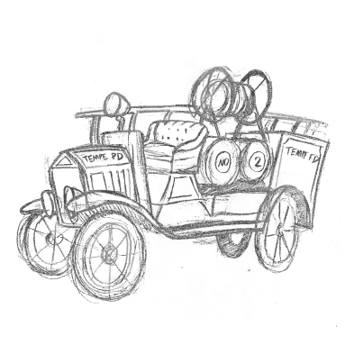
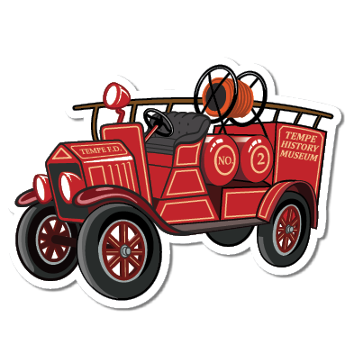
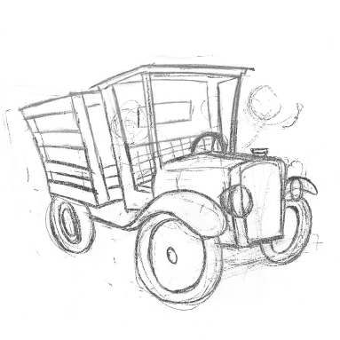
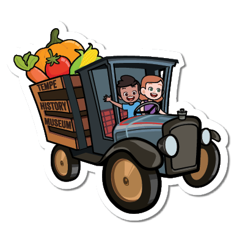
Tempe Center for the Arts
Tempe Center for the Arts wanted stickers to increase their brand recognition. I decided to make them about the building, since it's such a unique Tempe icon.
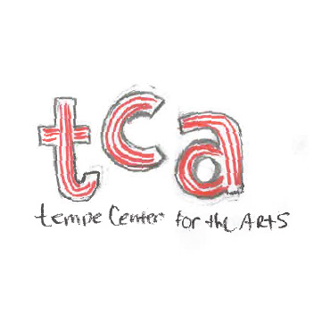
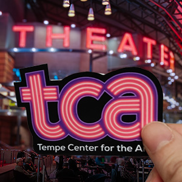
Thai Chili 2go
Thai Chili 2go wanted to deepen their customer loyalty with stickers. It's neat to see how these changed after client feedback. I really enjoyed figuring out how to draw noodles.
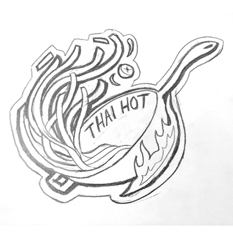
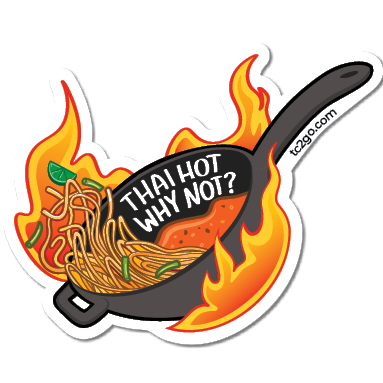
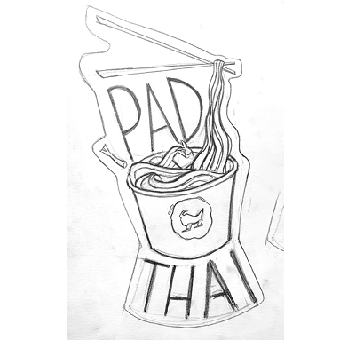
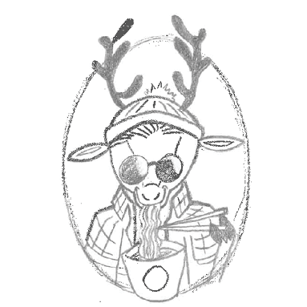
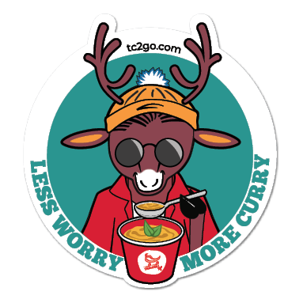
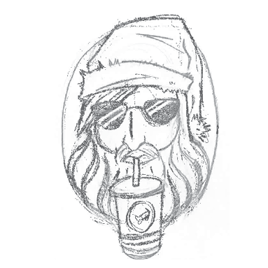
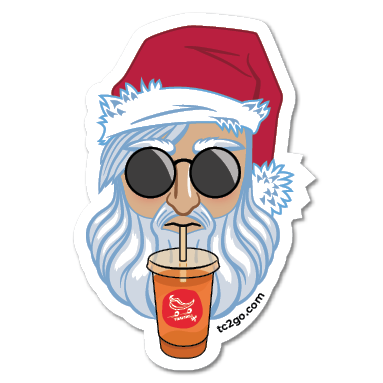